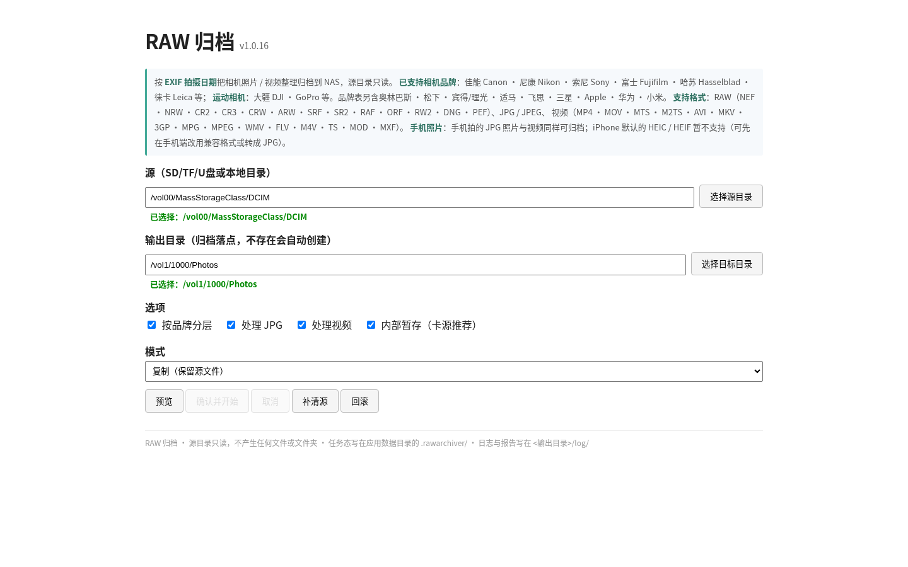
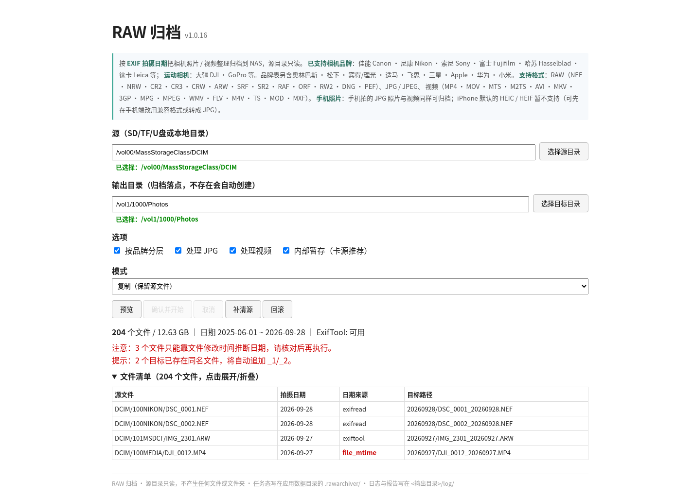
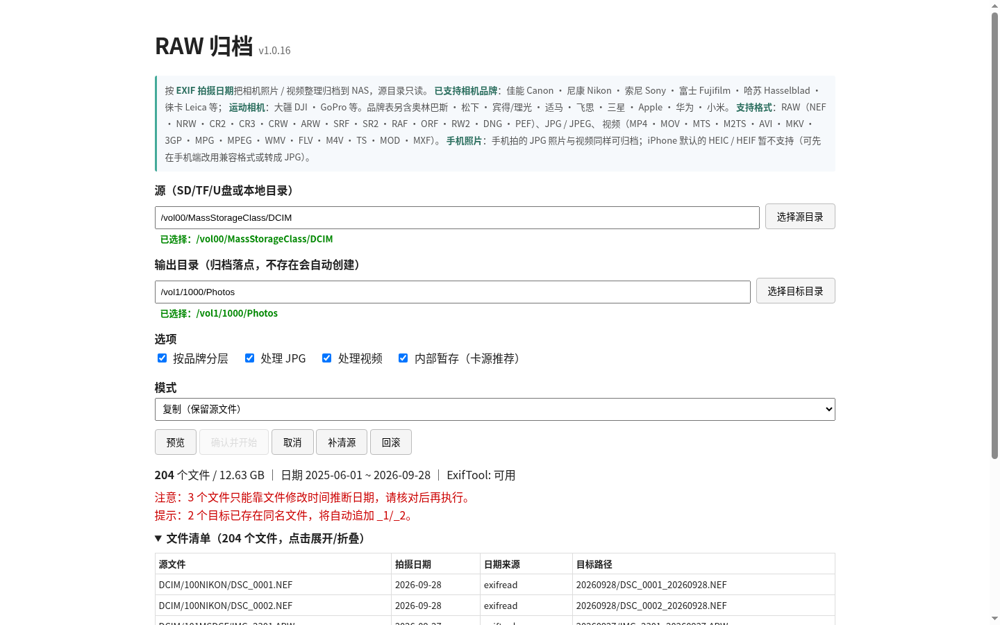

相机照片 / 视频
按拍摄日期自动归档到 NAS
读取每张照片的 EXIF 拍摄日期，把 RAW / JPG / 视频 整理进
YYYYMMDD/ 或 品牌/YYYYMMDD/ 目录。飞牛 fnOS 应用（fnpack），
源目录只读、可断点续跑、可清源、生成机器可读报告。
界面预览
选择源目录与目标目录 → 预览归档结果 → 一键执行。



核心特性
为「从相机卡搬到 NAS」这一件事设计，尽量少做多余的事。
📅按拍摄日期归档
读 EXIF DateTimeOriginal；照片读不到日期直接跳过，绝不猜；视频可用文件时间兜底。
🗂可选品牌分层
自动识别佳能 / 尼康 / 索尼 / 富士 / 哈苏 / 徕卡等，按 品牌/日期/ 分层，未收录机型照常归档。
🔒源目录只读
扫描过程不在源卡上创建任何文件或文件夹；复制成功后才谈清源。
⏯断点续跑
任务状态落在应用数据目录，中断后重跑不会重复处理已完成的文件。
🧹可清源 / 可回滚
复制模式可回滚；移动模式在归档完成后清源，清源失败只告警、不影响归档结果。
📄机器可读报告
每次任务生成 JSON 报告与逐文件日志，记录「源文件 → 目标文件」、成功/失败数与完成时间。
支持的格式与设备
共 30 个扩展名；品牌表用于可选的「按品牌分层」。
| RAW | .nef .nrw .cr2 .cr3 .crw .arw .srf .sr2 .raf .orf .rw2 .dng .pef |
|---|---|
| 照片 | .jpg .jpeg |
| 视频 | .mp4 .mov .mts .m2ts .avi .mkv .3gp .mpg .mpeg .wmv .flv .m4v .ts .mod .mxf |
手机拍的 JPG 照片 / 视频同样可归档；iPhone 默认的 HEIC / HEIF 暂不支持，需转成 JPG。
运动相机与相机品牌都会读 EXIF Make 识别；未收录机型也能按日期归档。
安装
飞牛 fnOS 用户在应用中心安装 fpk；也可以直接用 Python 跑核心脚本。
方式一 · 飞牛 fnOS 应用
从 Releases 下载 rawarchiver-<版本>.fpk，在「应用中心 → 手动安装」选择该文件；安装后在应用设置里授权源目录（读）与归档目录（读+写）。
方式二 · Python CLI
python3 raw_archiver.py /path/to/DCIM \
--output /vol1/1000/Photos \
--mode copy # copy=留源, move=归档后清源核心脚本仅依赖 Python 标准库；ExifTool 随包，视频日期识别更准。